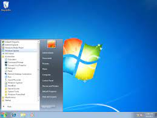

- software de sistema
- software de aplicacão
- software de progamacão
- software de segurança
- software de bases de dados
- software de redes
- software de educacional
- software de entreterimento
- software de gestão empresarial
- software de design assistido por (CAD)
O QUE É SOFTWARE? BY ARTHUR
Software é um conjunto de instruções que devem ser seguidas e executadas por um mecanismo, seja ele um computador ou um aparato eletromecânico. É o termo usado para descrever programas, apps, scripts, macros e instruções de código embarcado diretamente (firmware), de modo a ditar o que uma máquina deve fazer.
software de sistema
Os softwares de sistema são os responsáveis pelos sistemas operacionais de todos os dispositivos e auxiliam os usuários em seu uso, de forma visual e através de comandos. São extremamente complexos em sua construção. Exemplos: Windows, Android, iOS
windows. Androide. IOS.
software de aplicacão
Software que tem como objetivo ajudar o utilizador a executar tarefas específicas. Existem programas destinados a executar os mais diversos tipos de tarefas; compete ao utilizador instalar ou executar no computador o programa adequado ao desenvolvimento de uma tarefa
windows. Androide. IOS.
software de progamacão
Softwares de programação são softwares que permitem que programadores criem outros programas, através do uso de linguagens de programação. Eles fornecem ferramentas e soluções para testar, compartilhar, gerenciar e até de facilitar a escrita dos códigos
windows. Androide. IOS.
software de segurança
O que é um software de segurança da informação? Trata-se de uma classe de sistemas que age na identificação, na prevenção e no bloqueio de possíveis invasões, a partir dos códigos maliciosos. Ainda assim, existem sistemas para prevenir os ataques ou, até mesmo, para limitá-los.
windows. Androide. IOS.
software de bases de dados
O software de banco de dados às vezes também é conhecido como "sistema de gerenciamento de banco de dados" (DBMS). O software de banco de dados simplifica o gerenciamento de dados, permitindo que os usuários armazenem dados em um formulário estruturado e depois os acessem.
windows. Androide. IOS.
software de redes
Definição - O que significa Software de Rede? Software de rede é um termo extremamente amplo para uma gama de softwares voltados ao design e implementação de redes modernas. Vários tipos de software de rede suportam a criação, calibração e operação de redes
windows. Androide. IOS.
software de educacional
Programa de computador que visa atender necessidades e objetivos pedagógicos. Dessa forma, todo o software pode ser considerado educacional, desde que sua utilização esteja inserida num contexto e numa situação de ensino-aprendizagem, onde exista uma metodologia que oriente todo o processo.
windows. Androide. IOS.
software de entreterimento
O software de entretenimento inclui videogames, vídeos e qualquer outro software que o usuário considere agradável.
windows. Androide. IOS.
software de gestão empresarial
Software de Gestão Onde Você Acessa Todas as Informações Sobre o Seu Negócio em Tempo Real. Software de Gestão 100% Online, Perfeito para Grandes e Médias Empresas. Solicite Contato.
windows. Androide. IOS.
software de design assistido por (CAD)
O design assistido por computador (CAD) é uma forma de criar digitalmente esquemas 2D e modelos 3D de produtos do mundo real — antes que eles sejam fabricados.
windows. Androide. IOS.
- Windows 1.0. O início de tudo.
- Windows 2.0 e 2.1. Posteriormente, houve o lançamento do Windows 2 em dezembro de 1987.
- Windows 3.0 e Windows NT.
- Windows 95 e a Internet.
- Windows 98, Windows ME e Windows 2000.
- Windows XP.
- Windows Vista.
- Windows 7.
- Windows 8.
- Windows 10.
- Windos 11.
o que é o Windows
Windows é um sistema operacional de multitarefas para computadores e dispositivos móveis desenvolvido pela Microsoft. A palavra Windows significa literalmente “janelas”, na tradução do inglês para o português. Considerado um dos sistemas operacionais mais utilizados em todo o mundo, o Windows começou a ser projetado em 1981, mas foi apenas em 1993 que sua primeira versão foi lançada.
Windows 1.0.
Windows 1.0 foi uma interface gráfica de usuário (GUI) entre o sistema operacional Microsoft DOS e o computador, é a primeiro versão da família Windows.
Windows 2.0 e 2.1.
Windows 2.0 foi uma interface gráfica de usuário (GUI) entre o sistema operacional Microsoft DOS e o computador, é a segunda versão da família Windows desenvolvido pela empresa norte-americana Microsoft lançado em 9 de dezembro de 1987, sucessor da versao Windows 1.x. Inicialmente, este não era um sistema operacional próprio, era apenas uma interface no modo gráfico que com o auxílio do dispositivo mouse facilitava o uso do computador com sistema MS-DOS, com funcionalidades relativamente limitadas. A primeira tentativa de criar um sistema multitarefa. Foi desenvolvido até versão 2.11. Sendo sucedido pelo Windows 3.x, lançado em 1990.

Windows 3.0 e Windows NT.
A 22 de maio de 1990, a Microsoft anuncia o Windows 3.0, seguido pouco depois pelo Windows 3.1, em 1992. Em conjunto, as duas edições vendem 10 milhões de cópias durante os dois primeiros anos, tornando-o no sistema operativo Windows mais utilizado de sempre. A escala deste êxito faz com que a Microsoft reavalie os seus planos iniciais. A Memória Virtual melhora os gráficos visuais. Em 1990, o Windows começa a assemelhar-se às suas versões posteriores.

Windows 95 e a Internet.
Apesar do Windows 3.1.1 ter contado antes funcionalidade de internet, o Windows 95 facilitou profundamente o processo de conexão. Até então era preciso manipular um arquivo DLL manualmente para ativar a função, algo que a nova versão deixava de lado graças ao suporte nativo para conexões discadas.
Windows 98, Windows ME e Windows 2000.
O Windows Millennium Edition (ou Windows ME) é uma versão do Windows reconhecida como um dos maiores fracassos da Microsoft. O sistema foi lançado há 20 anos, em 14 setembro de 2000, e é famoso pelas telas azuis e por travar com uma simples mexida no mouse. Considerado lento e problemático, o Windows ME teve tantos problemas que durou menos de um ano no mercado. Em agosto de 2001, ele já havia sido substituído pelo Windows XP, que corrigiu grande parte dos falhas da edição anterior.
Windows XP.
O Windows XP é um sistema operacional da Microsoft para computadores, desktop, notebooks, tablets e media centers. Lançado em 2001, o sistema foi muito bem recebido pelos usuários e continua sendo muito utilizado, mesmo após o encerramento do suporte em abril de 2014.
Windows Vista.
O Windows Vista é uma versão do sistema operacional da Microsoft, lançada em 2007, que se destina a computadores pessoais, laptops, tablets e empresariais. Entre os recursos apresentados, destaca-se a reformulação da interface gráfica, mudando drasticamente o padrão das versões anteriores.
Windows 7.
O Windows 7 chegou ao mercado em outubro de 2009 e tornou-se um dos sistemas operacionais de maior sucesso. Atualmente, porém, não é mais possível fazer o download do Windows 7, pois não há mais suporte para o sistema. Fim do suporte ao Windows 7: veja sete perguntas e respostas.
Windows 8.
Windows 8 é uma versão do Microsoft Windows, uma série de sistemas operacionais desenvolvidos pela Microsoft para computadores pessoais, laptops e tablets.[4] É o sucessor do Windows 7. Foi anunciado oficialmente por Steve Ballmer, diretor executivo da Microsoft, durante a conferência de pré-lançamento do sistema operacional. O Windows 8 Developer Preview, primeira versão beta do sistema, foi lançado no dia 13 de setembro de 2011 e depois foi seguida pela versão Consumer Preview no dia 29 de fevereiro de 2012.
Windows 10.
O Windows 10 é uma versão do sistema operacional da Microsoft disponível para download em PC e em notebook. O W10 trouxe uma série de mudanças relevantes na forma como o SO é produzido, distribuído e mantido pela desenvolvedora norte-americana. Há duas versões do Windows 10: Pro ou Home – veja as diferenças e saiba qual versão comprar.
Windows 11.
Windows 11 é a versão mais recente do sistema operacional da Microsoft para computadores. Lançado em 5 de outubro de 2021, o sucessor do Windows 10 vem com visual mais limpo e minimalista, incluindo ícones remodelados, janelas translúcidas, nova iconografia e um Menu Iniciar centralizado. O software traz também avanços em produtividade, com destaque para os novos layout snaps – um modo especial para gerenciar janelas –, integração com Microsoft Teams e suporte aprimorado a desktops virtuais.
- Linux Mint
- Linux Ubuntu
- Linux Deepin
- Kali Linux
- Manjaro Linux
- Linux Debian
- Puppy Linux
- Linux OpenSUSE
- Linux Lite
- MX Linux
- Linux CentOS
- Arch Linux
- Linux Zorin OS
- Linux Slackware
- Oracle Linux
- Elementary OS
- Linux Fedora
- Tails Linux
- Linux Raspbian
- Linux Pop!_OS
-
O termo Linux refere-se ao núcleo (em inglês: "kernel") do sistema operativo que inicia e gerencia outros programas que fornecem o acesso aos recursos do sistema como os vários software livres de shells, compiladores, bibliotecas-padrão e os comandos que fazem parte do Projeto GNU.
A interface que o Linux Mint usa é Cinnamon que não faz o usuário se sentir estranho. Para a maioria das pessoas que utilizam o Windows, o Linux Mint vai parecer bem confortável. Você consegue iniciar aplicativos clicando em um botão no canto inferior esquerdo.

O termo Linux refere-se ao núcleo (em inglês: "kernel") do sistema operativo que inicia e gerencia outros programas que fornecem o acesso aos recursos do sistema como os vários software livres de shells, compiladores, bibliotecas-padrão e os comandos que fazem parte do Projeto GNU.
Desenvolvido por uma empresa chamada Canonical, o Ubuntu é baseado em um dos muitos derivados do Linux Debian. Esse software chegou ao mercado em 2004. As pessoas programadoras na época perceberam os destaques do sistema e sua facilidade na programação. A interface de linha de comando permitia que fosse usada uma sintaxe mínima para escrever programas. O Ubuntu tem três versões, todas desenvolvidas para diferentes propósitos.

O termo Linux refere-se ao núcleo (em inglês: "kernel") do sistema operativo que inicia e gerencia outros programas que fornecem o acesso aos recursos do sistema como os vários software livres de shells, compiladores, bibliotecas-padrão e os comandos que fazem parte do Projeto GNU.
Deepin é uma distribuição baseada em Debian (era baseada em Ubuntu até a versão 15 lançada no final de 2015) que tem como objetivo fornecer uma interface elegante, confiável e amigável

O termo Linux refere-se ao núcleo (em inglês: "kernel") do sistema operativo que inicia e gerencia outros programas que fornecem o acesso aos recursos do sistema como os vários software livres de shells, compiladores, bibliotecas-padrão e os comandos que fazem parte do Projeto GNU.
Offensive Security é a empresa responsável pelo Kali Linux. Ele por si só é uma distro Linux baseada em Debian. Foi projetado para ajudar principalmente profissionais da área de segurança com seus inúmeros testes

O termo Linux refere-se ao núcleo (em inglês: "kernel") do sistema operativo que inicia e gerencia outros programas que fornecem o acesso aos recursos do sistema como os vários software livres de shells, compiladores, bibliotecas-padrão e os comandos que fazem parte do Projeto GNU.
O Manjaro Linux oferece o XFCE como as principais opções de desktop, bem como KDE, GNOME e uma edição minimalista da Net para pessoas usuárias mais avançadas. Faça o download do Manjaro agora mesmo.

O termo Linux refere-se ao núcleo (em inglês: "kernel") do sistema operativo que inicia e gerencia outros programas que fornecem o acesso aos recursos do sistema como os vários software livres de shells, compiladores, bibliotecas-padrão e os comandos que fazem parte do Projeto GNU.
Debian é a distribuição mais antiga e mais popular do Linux. Como qualquer outro distro de peso, fornece uma ambientação muito agradável e rápida. Atualmente, sua última versão é a 11, que também é chamada de Bullseye.

O termo Linux refere-se ao núcleo (em inglês: "kernel") do sistema operativo que inicia e gerencia outros programas que fornecem o acesso aos recursos do sistema como os vários software livres de shells, compiladores, bibliotecas-padrão e os comandos que fazem parte do Projeto GNU.
Puppy Linux é mais uma distribuição Linux. A diferença aqui é que o Puppy é extraordinariamente pequeno, mas cheio de recursos. O Puppy inicializa em um ramdisk e, ao contrário das distribuições de live CD que tem que extrair coisas do CD, ele carrega na RAM. Isso significa que todos os aplicativos começam em um piscar de olhos e respondem à entrada instantaneamente.

O termo Linux refere-se ao núcleo (em inglês: "kernel") do sistema operativo que inicia e gerencia outros programas que fornecem o acesso aos recursos do sistema como os vários software livres de shells, compiladores, bibliotecas-padrão e os comandos que fazem parte do Projeto GNU.
O OpenSUSE é mais uma das distribuições Linux que tem como objetivo fornecer uma interface moderna e rápida para pessoas usuárias de desktop e desenvolvedoras de todo mundo.

O termo Linux refere-se ao núcleo (em inglês: "kernel") do sistema operativo que inicia e gerencia outros programas que fornecem o acesso aos recursos do sistema como os vários software livres de shells, compiladores, bibliotecas-padrão e os comandos que fazem parte do Projeto GNU.
Linux Lite é uma distribuição Linux amigável para iniciantes baseada no lançamento de suporte de longo prazo (LTS) do Ubuntu e utilizando o desktop XFCE.

O termo Linux refere-se ao núcleo (em inglês: "kernel") do sistema operativo que inicia e gerencia outros programas que fornecem o acesso aos recursos do sistema como os vários software livres de shells, compiladores, bibliotecas-padrão e os comandos que fazem parte do Projeto GNU.
MX Linux é uma distribuição Linux feita para desktop baseada na branch “Stable” do Debian e é um empreendimento cooperativo entre o antiX e as antigas comunidades MEPIS Linux.

O termo Linux refere-se ao núcleo (em inglês: "kernel") do sistema operativo que inicia e gerencia outros programas que fornecem o acesso aos recursos do sistema como os vários software livres de shells, compiladores, bibliotecas-padrão e os comandos que fazem parte do Projeto GNU.
O Linux CentOS é mais um sistema operacional gratuito que tem como objetivo criar um ecossistema de código aberto confiável. Ele é baseado no RHEL, e é uma das alternativas do Red Hat Enterprise Linux por ser gratuito.

O termo Linux refere-se ao núcleo (em inglês: "kernel") do sistema operativo que inicia e gerencia outros programas que fornecem o acesso aos recursos do sistema como os vários software livres de shells, compiladores, bibliotecas-padrão e os comandos que fazem parte do Projeto GNU.
Arch Linux é a distribuição que foi projetada para pessoas usuárias avançadas ou especialistas em Linux. Sendo possível configurar e personalizar o sistema da maneira que a pessoa usuária quiser. Podemos dizer também que o Arch é voltado para pessoas que gostam de ter controle sobre o seu sistema operacional.

O termo Linux refere-se ao núcleo (em inglês: "kernel") do sistema operativo que inicia e gerencia outros programas que fornecem o acesso aos recursos do sistema como os vários software livres de shells, compiladores, bibliotecas-padrão e os comandos que fazem parte do Projeto GNU.
Zorin OS é uma distribuição Linux baseada no Ubuntu projetada especialmente para iniciantes no Linux. Possui uma interface gráfica de usuário semelhante ao Windows e muitos programas semelhantes aos encontrados no Windows.

O termo Linux refere-se ao núcleo (em inglês: "kernel") do sistema operativo que inicia e gerencia outros programas que fornecem o acesso aos recursos do sistema como os vários software livres de shells, compiladores, bibliotecas-padrão e os comandos que fazem parte do Projeto GNU.
O lançamento oficial do Slackware Linux foi feito por Patrick Volkerding e é um sistema operacional Linux avançado. Foi projetado com o objetivo de ser um sistema fácil de usar e é principalmente estável.

O termo Linux refere-se ao núcleo (em inglês: "kernel") do sistema operativo que inicia e gerencia outros programas que fornecem o acesso aos recursos do sistema como os vários software livres de shells, compiladores, bibliotecas-padrão e os comandos que fazem parte do Projeto GNU.
O Oracle Linux é uma distribuição Linux para a classe empresarial e é suportada pela Oracle que a constrói a partir dos pacotes do Red Hat Enterprise Linux (RHEL).

O termo Linux refere-se ao núcleo (em inglês: "kernel") do sistema operativo que inicia e gerencia outros programas que fornecem o acesso aos recursos do sistema como os vários software livres de shells, compiladores, bibliotecas-padrão e os comandos que fazem parte do Projeto GNU.
Alguns de seus recursos mais interessantes incluem um ambiente de área de trabalho personalizado chamado Pantheon e muitos aplicativos personalizados, incluindo fotos, músicas, vídeos, calendário, terminal, arquivos e muito mais. Ele também vem com alguns aplicativos familiares como o navegador Epiphany e um fork do Geary Mail.

O termo Linux refere-se ao núcleo (em inglês: "kernel") do sistema operativo que inicia e gerencia outros programas que fornecem o acesso aos recursos do sistema como os vários software livres de shells, compiladores, bibliotecas-padrão e os comandos que fazem parte do Projeto GNU.
Fedora dentre as distribuições linux é a que mais se destaca por ser realmente simples e prover uma grande quantidade de aplicativos previamente instalados. Isso a torna uma distribuição muito amigável e que facilita a entrada de novas pessoas usuárias.

O termo Linux refere-se ao núcleo (em inglês: "kernel") do sistema operativo que inicia e gerencia outros programas que fornecem o acesso aos recursos do sistema como os vários software livres de shells, compiladores, bibliotecas-padrão e os comandos que fazem parte do Projeto GNU.
The Amnesic Incognito Live System (Tails) é uma distro baseada em Debian com o objetivo de fornecer anonimato completo na Internet

O termo Linux refere-se ao núcleo (em inglês: "kernel") do sistema operativo que inicia e gerencia outros programas que fornecem o acesso aos recursos do sistema como os vários software livres de shells, compiladores, bibliotecas-padrão e os comandos que fazem parte do Projeto GNU.
Raspberry Pi OS (anteriormente Raspbian) é um sistema operacional gratuito baseado no Debian e otimizado para o hardware do Raspberry Pi (a arquitetura do processador ARMHF).

O termo Linux refere-se ao núcleo (em inglês: "kernel") do sistema operativo que inicia e gerencia outros programas que fornecem o acesso aos recursos do sistema como os vários software livres de shells, compiladores, bibliotecas-padrão e os comandos que fazem parte do Projeto GNU.
Pop! _OS é uma distribuição Linux baseada no Ubuntu que utiliza o GNOME como sua área de trabalho personalizada.